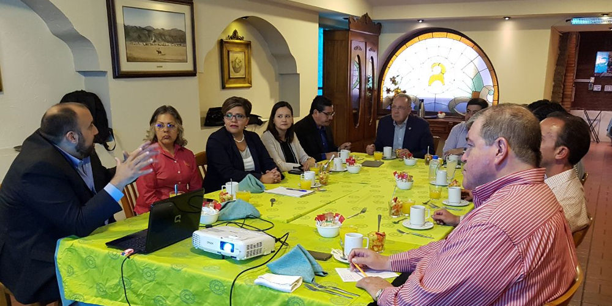
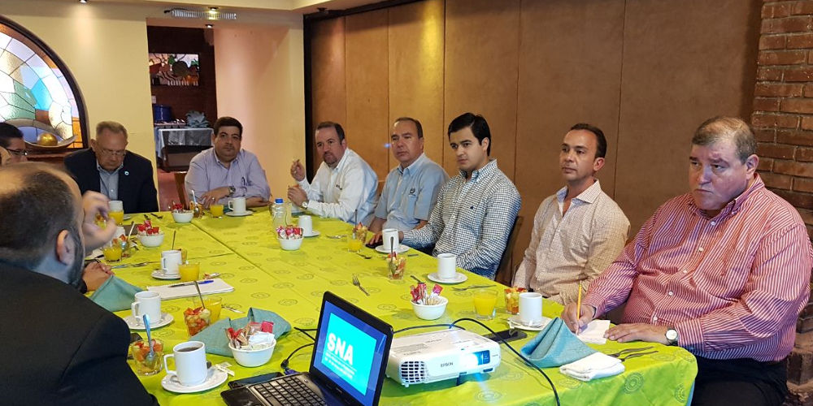

Manifestaron su preocupación por la prevalencia de posibles situaciones irregulares en los procesos y trámites, que afectan el desarrollo de la economía de la región y la entidad
Sistema Anticorrupción del Estado de Coahuila. Consejo de Participación Ciudadana.
Saltillo, Coahuila.- Durante la reunión de integrantes del Consejo de Participación Ciudadana del Sistema Estatal Anticorrupción de Coahuila con miembros de la Unión de Organismos Empresariales Coahuila-Sureste se habló de los alcances y las acciones que está desplegando el CPC, como parte de su Plan de Trabajo.
En la sesión que se llevó a cabo el martes 3 de abril de 2018 en Saltillo, líderes de cámaras empresariales manifestaron su preocupación por la prevalencia de posibles situaciones irregulares en los procesos y trámites que realizan en ventanilla o áreas de atención directa al público, que aseguraron, afecta el desarrollo de la economía de la región y la entidad.

Además consideraron la necesidad de incentivar o implementar mecanismos que permitan agilizar la obtención de permisos, registros o certificados en oficinas estatales y/o municipales, así como acciones tendientes a revertir los índices de corrupción e impunidad que registra la entidad y que los empresarios marcaron como un asunto prioritario en la agenda estatal.
En esta jornada estuvieron presentes Jorge Tafich Martínez, presidente de la Cámara Nacional de Comercio (CANACO) de Saltillo y secretario general de la Unión de Organismos Empresariales Coahuila-Sureste; Everardo Padilla Flores, presidente de la Cámara Nacional de la Industria de la Transformación (CANACINTRA Sureste); Luis Gerardo Rodríguez Pader, presidente de la Asociación de Industriales y Empresarios de Ramos Arizpe (AIERA); Ernesto Ruiz Valdés, presidente de la Asociación de Recursos Humanos Coahuila-Sureste, A.C. (ARHCOS).

Así mismo participaron Eder Alejandro López González, representante de la Cámara Nacional de la Industria Restaurantera y Alimentos Condimentados (CANIRAC); Roberto Cabello Elizondo, representante de la Cámara de la Propiedad Inmobiliaria (CAPI) y César Valdés Ramos, gerente de la CANACO Saltillo.
Por parte del Consejo de Participación Ciudadana: Manuel Gil Navarro, presidente y los consejeros Ana Yuri Solís Gaona, Carlos Rangel Orona y Lourdes de Koster López.

03 abril 2018